Tutti i materiali
Cerca un tema o filtra per area e classe. Ogni pagina del materiale porta direttamente al prodotto.
2.418 materiali
Tema
Classe
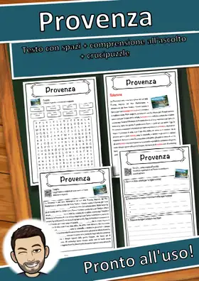
Provenza – Scheda: testo con spazi vuoti, comprensione all'ascolto e crucipuzzle
Prodotto interno lordo – Scheda: testo con spazi vuoti, comprensione all'ascolto e crucipuzzle
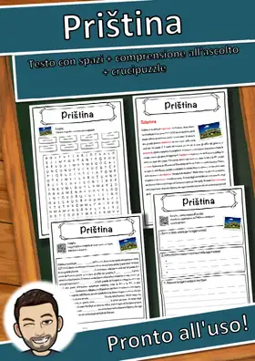
Priština – Scheda: testo con spazi vuoti, comprensione all'ascolto e crucipuzzle
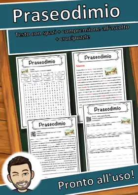
Praseodimio – Scheda: testo con spazi vuoti, comprensione all'ascolto e crucipuzzle
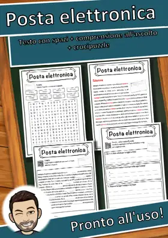
Posta elettronica – Scheda: testo con spazi vuoti, comprensione all'ascolto e crucipuzzle
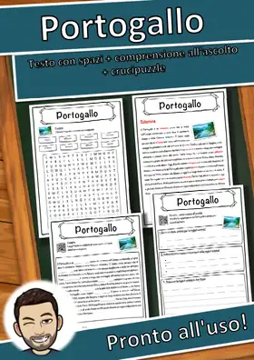
Portogallo – Scheda: testo con spazi vuoti, comprensione all'ascolto e crucipuzzle
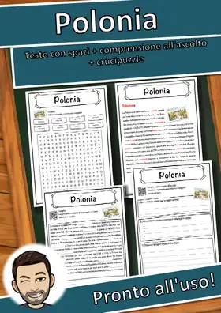
Polonia – Scheda: testo con spazi vuoti, comprensione all'ascolto e crucipuzzle
Libbra – Scheda: testo con spazi vuoti, comprensione all'ascolto e crucipuzzle
Pëtr Il'ič Čajkovskij – Scheda: testo con spazi vuoti, comprensione all'ascolto e crucipuzzle
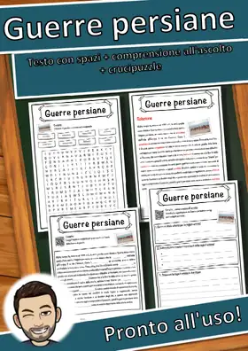
Guerre persiane – Scheda: testo con spazi vuoti, comprensione all'ascolto e crucipuzzle

Tavola periodica degli elementi – Scheda: testo con spazi vuoti, comprensione all'ascolto e crucipuzzle
Pensiero – Scheda: testo con spazi vuoti, comprensione all'ascolto e crucipuzzle
Penisola – Scheda: testo con spazi vuoti, comprensione all'ascolto e crucipuzzle
Pena di morte – Scheda: testo con spazi vuoti, comprensione all'ascolto e crucipuzzle

Ice – Scheda: testo con spazi vuoti, comprensione all'ascolto e crucipuzzle
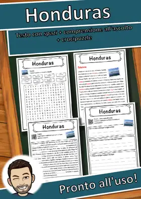
Honduras – Scheda: testo con spazi vuoti, comprensione all'ascolto e crucipuzzle
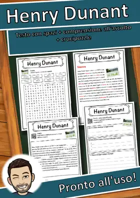
Henry Dunant – Scheda: testo con spazi vuoti, comprensione all'ascolto e crucipuzzle
Guinness dei primati – Scheda: testo con spazi vuoti, comprensione all'ascolto e crucipuzzle
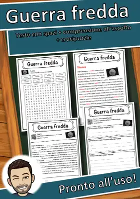
Guerra fredda – Scheda: testo con spazi vuoti, comprensione all'ascolto e crucipuzzle
Guardaboschi – Scheda: testo con spazi vuoti, comprensione all'ascolto e crucipuzzle
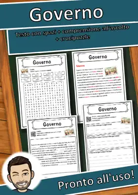
Governo – Scheda: testo con spazi vuoti, comprensione all'ascolto e crucipuzzle
Gomma da masticare – Scheda: testo con spazi vuoti, comprensione all'ascolto e crucipuzzle

Energia rinnovabile – Scheda: testo con spazi vuoti, comprensione all'ascolto e crucipuzzle
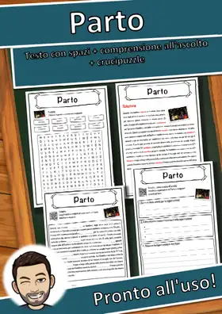
Parto – Scheda: testo con spazi vuoti, comprensione all'ascolto e crucipuzzle
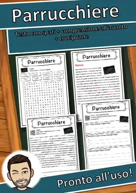
Parrucchiere – Scheda: testo con spazi vuoti, comprensione all'ascolto e crucipuzzle
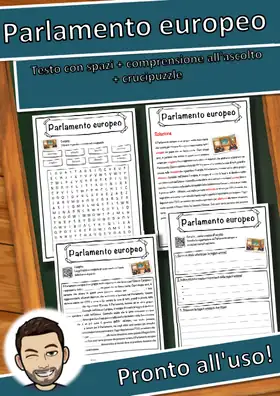
Parlamento europeo – Scheda: testo con spazi vuoti, comprensione all'ascolto e crucipuzzle
Parco giochi – Scheda: testo con spazi vuoti, comprensione all'ascolto e crucipuzzle
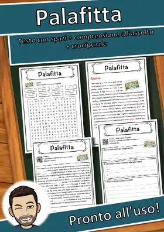
Palafitta – Scheda: testo con spazi vuoti, comprensione all'ascolto e crucipuzzle
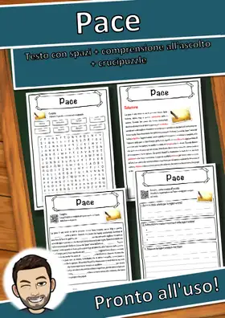
Pace – Scheda: testo con spazi vuoti, comprensione all'ascolto e crucipuzzle
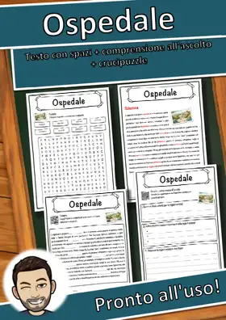
Ospedale – Scheda: testo con spazi vuoti, comprensione all'ascolto e crucipuzzle
Ornithorhynchus anatinus – Scheda: testo con spazi vuoti, comprensione all'ascolto e crucipuzzle

Orchestra – Scheda: testo con spazi vuoti, comprensione all'ascolto e crucipuzzle

Onda – Scheda: testo con spazi vuoti, comprensione all'ascolto e crucipuzzle

Omosessualità – Scheda: testo con spazi vuoti, comprensione all'ascolto e crucipuzzle

Olmio – Scheda: testo con spazi vuoti, comprensione all'ascolto e crucipuzzle

Oasi – Scheda: testo con spazi vuoti, comprensione all'ascolto e crucipuzzle

Nobelio – Scheda: testo con spazi vuoti, comprensione all'ascolto e crucipuzzle

Nichel – Scheda: testo con spazi vuoti, comprensione all'ascolto e crucipuzzle

Nervo – Scheda: testo con spazi vuoti, comprensione all'ascolto e crucipuzzle

Neodimio – Scheda: testo con spazi vuoti, comprensione all'ascolto e crucipuzzle

Namibia – Scheda: testo con spazi vuoti, comprensione all'ascolto e crucipuzzle

Monte Bianco – Scheda: testo con spazi vuoti, comprensione all'ascolto e crucipuzzle

Modellismo ferroviario – Scheda: testo con spazi vuoti, comprensione all'ascolto e crucipuzzle

Mobbing – Scheda: testo con spazi vuoti, comprensione all'ascolto e crucipuzzle

Ministro – Scheda: testo con spazi vuoti, comprensione all'ascolto e crucipuzzle

Micronesia – Scheda: testo con spazi vuoti, comprensione all'ascolto e crucipuzzle

Metabolismo – Scheda: testo con spazi vuoti, comprensione all'ascolto e crucipuzzle

Mestruazione – Scheda: testo con spazi vuoti, comprensione all'ascolto e crucipuzzle
Nessun materiale trovato: prova con un'altra parola o un altro filtro.